library(cytomapper)
library(dplyr)
library(ggplot2)
library(simpleSeg)
library(FuseSOM)
library(ggpubr)
library(scater)
library(spicyR)
library(ClassifyR)
library(lisaClust)
library(Statial)
library(tidySingleCellExperiment)
library(SpatialExperiment)
library(SpatialDatasets)8 Case Study: Head and Neck Squamous Cell Carcinoma (Ferguson et al., 2022)
8.1 Load libraries
8.2 Global parameters
It is convenient to set the number of cores for running code in parallel. Please choose a number that is appropriate for your resources. Set the use_mc flag to TRUE if you would like to use parallel processing for the rest of the vignette. A minimum of 2 cores is suggested since running this workflow is rather computationally intensive.
use_mc <- TRUE
if (use_mc) {
nCores <- max(parallel::detectCores()/2, 1)
} else {
nCores <- 2
}
BPPARAM <- simpleSeg:::generateBPParam(nCores)
theme_set(theme_classic())8.3 Context
In the following we will re-analyse some IMC data (Ferguson et al, 2022) profiling the spatial landscape of head and neck cutaneous squamous cell carcinomas (HNcSCC), the second most common type of skin cancer. The majority of HNcSCC can be treated with surgery and good local control, but a subset of large tumours infiltrate subcutaneous tissue and are considered high risk for local recurrence and metastases. The key conclusion of this manuscript (amongst others) is that spatial information about cells and the immune environment can be used to predict primary tumour progression or metastases in patients. We will use our spicy workflow to reach a similar conclusion.
The R code for this analysis is available on github https://github.com/SydneyBioX/spicyWorkflow.
8.4 Read in images
Once the spicyWorkflow package is installed, these images will be located within the spicyWorkflow folder where the spicyWorkflow package is installed, under inst/extdata/images. Here we use loadImages() from the cytomapper package to load all the tiff images into a CytoImageList object and store the images as h5 file on-disk in a temporary directory using the h5FilesPath = HDF5Array::getHDF5DumpDir() parameter.
We will also assign the metadata columns of the CytoImageList object using the mcols() function.
pathToImages <- SpatialDatasets::Ferguson_Images()see ?SpatialDatasets and browseVignettes('SpatialDatasets') for documentationloading from cachetmp <- tempfile()
unzip(pathToImages, exdir = tmp)
# Store images in a CytoImageList on_disk as h5 files to save memory.
images <- cytomapper::loadImages(
tmp,
single_channel = TRUE,
on_disk = TRUE,
h5FilesPath = HDF5Array::getHDF5DumpDir(),
BPPARAM = BPPARAM
)
mcols(images) <- S4Vectors::DataFrame(imageID = names(images))8.4.1 Clean channel names
As we’re reading the image channels directly from the names of the TIFF image, often these channel names will need to be cleaned for ease of downstream processing.
The channel names can be accessed from the CytoImageList object using the channelNames() function.
cn <- channelNames(images) # Read in channel names
head(cn)[1] "139La_139La_panCK.ome" "141Pr_141Pr_CD20.ome"
[3] "142Nd_142Nd_HH3.ome" "143Nd_143Nd_CD45RA.ome"
[5] "146Nd_146Nd_CD8a.ome" "147Sm_147Sm_podoplanin.ome"cn <- sub(".*_", "", cn) # Remove preceding letters
cn <- sub(".ome", "", cn) # Remove the .ome
head(cn)[1] "panCK" "CD20" "HH3" "CD45RA" "CD8a"
[6] "podoplanin"channelNames(images) <- cn # Reassign channel names8.4.2 Clean image names
Similarly, the image names will be taken from the folder name containing the individual TIFF images for each channel. These will often also need to be cleaned.
head(names(images))[1] "ROI001_ROI 01_F3_SP16-001550_1E" "ROI002_ROI 02_F4_SP16-001550_1E"
[3] "ROI003_ROI 03_F5_SP16-001550_1E" "ROI005_ROI 05_G4_SP17-002069_1F"
[5] "ROI006_ROI 06_G5_SP17-002069_1F" "ROI007_ROI 07_G6_SP17-005715_1B"nam <- sapply(strsplit(names(images), "_"), `[`, 3)
head(nam)[1] "F3" "F4" "F5" "G4" "G5" "G6"names(images) <- nam # Reassigning image names
mcols(images)[["imageID"]] <- nam # Reassigning image names8.5 SimpleSeg: Segment the cells in the images
Our simpleSeg R package on https://github.com/SydneyBioX/simpleSeg provides a series of functions to generate simple segmentation masks of images. These functions leverage the functionality of the EBImage package on Bioconductor. For more flexibility when performing your segmentation in R we recommend learning to use the EBimage package. A key strength of the simpleSeg package is that we have coded multiple ways to perform some simple segmentation operations as well as incorporating multiple automatic procedures to optimise some key parameters when these aren’t specified.
8.5.1 Run simpleSeg
If your images are stored in a list or CytoImageList they can be segmented with a simple call to simpleSeg(). To summarise, simpleSeg() is an R implementation of a simple segmentation technique which traces out the nuclei using a specified channel using nucleus then dilates around the traced nuclei by a specified amount using discSize. The nucleus can be traced out using either one specified channel, or by using the principal components of all channels most correlated to the specified nuclear channel by setting pca = TRUE.
In the particular example below, we have asked simpleSeg to do the following:
By setting nucleus = c("HH3"), we’ve asked simpleSeg to trace out the nuclei signal in the images using the HH3 channel. By setting pca = TRUE, simpleSeg segments out the nuclei mask using a principal component analysis of all channels and using the principal components most aligned with the nuclei channel, in this case, HH3. By setting cellBody = "dilate", simpleSeg uses a dilation strategy of segmentation, expanding out from the nucleus by a specified discSize. By setting discSize = 3, simpleSeg dilates out from the nucleus by 3 pixels. By setting sizeSelection = 20, simpleSeg ensures that only cells with a size greater than 20 pixels will be used. By setting transform = "sqrt", simpleSeg square root transforms each of the channels prior to segmentation. By setting tissue = c("panCK", "CD45", "HH3"), we specify a tissue mask which simpleSeg uses, filtering out all background noise outside the tissue mask. This is important as these are tumour cores, wand hence circular, so we’d want to ignore background noise which happens outside of the tumour core.
There are many other parameters that can be specified in simpleSeg (smooth, watershed, tolerance, and ext), and we encourage the user to select the best parameters which suit their biological context.
masks <- simpleSeg(images,
nucleus = c("HH3"),
pca = TRUE,
cellBody = "dilate",
discSize = 3,
sizeSelection = 20,
transform = "sqrt",
tissue = c("panCK", "CD45", "HH3"),
cores = nCores
)8.5.2 Visualise separation
The display and colorLabels functions in EBImage make it very easy to examine the performance of the cell segmentation. The great thing about display is that if used in an interactive session it is very easy to zoom in and out of the image.
EBImage::display(colorLabels(masks[[1]]))
8.5.3 Visualise outlines
The plotPixels function in cytomapper makes it easy to overlay the mask on top of the nucleus intensity marker to see how well our segmentation process has performed. Here we can see that the segmentation appears to be performing reasonably.
If you see over or under-segmentation of your images, discSize is a key parameter in simpleSeg() for optimising the size of the dilation disc after segmenting out the nuclei.
plotPixels(image = images["F3"],
mask = masks["F3"],
img_id = "imageID",
colour_by = c("HH3"),
display = "single",
colour = list(HH3 = c("black","blue")),
legend = NULL,
bcg = list(
HH3 = c(1, 1, 2)
))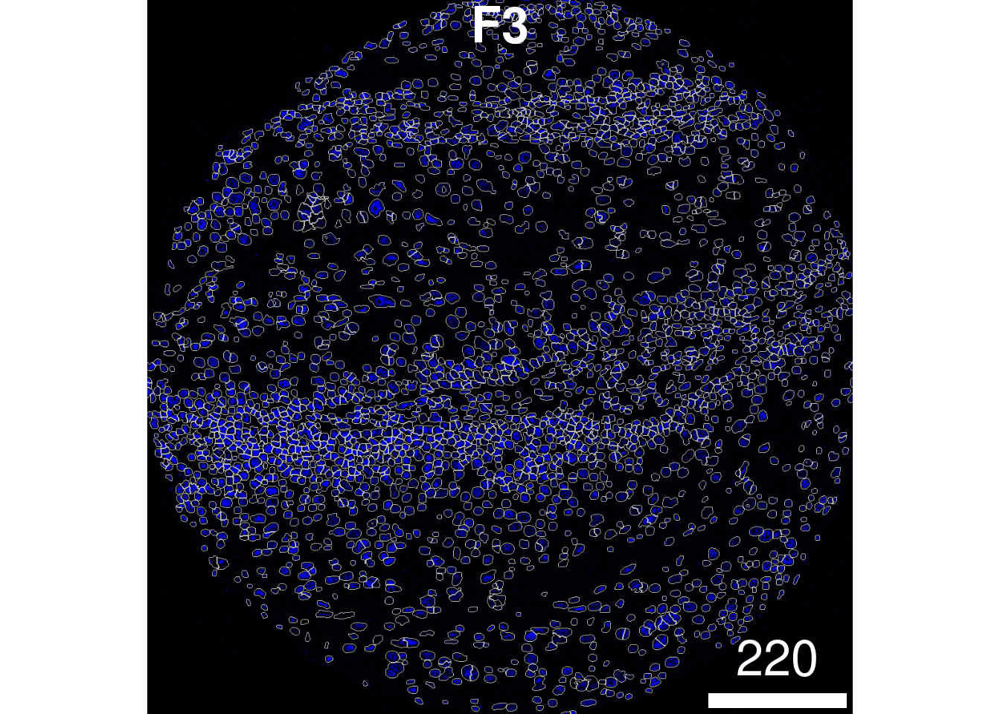
If you wish to visualise multiple markers instead of just the HH3 marker and see how the segmentation mask performs, this can also be done. Here, we can see that our segmentation mask has done a good job of capturing the CD31 signal, but perhaps not such a good job of capturing the FXIIIA signal, which often lies outside of our dilated nuclear mask. This could suggest that we might need to increase the discSize of our dilation.
plotPixels(image = images["F3"],
mask = masks["F3"],
img_id = "imageID",
colour_by = c("HH3", "CD31", "FX111A"),
display = "single",
colour = list(HH3 = c("black","blue"),
CD31 = c("black", "red"),
FX111A = c("black", "green") ),
legend = NULL,
bcg = list(
HH3 = c(1, 1, 2),
CD31 = c(0, 1, 2),
FX111A = c(0, 1, 1.5)
))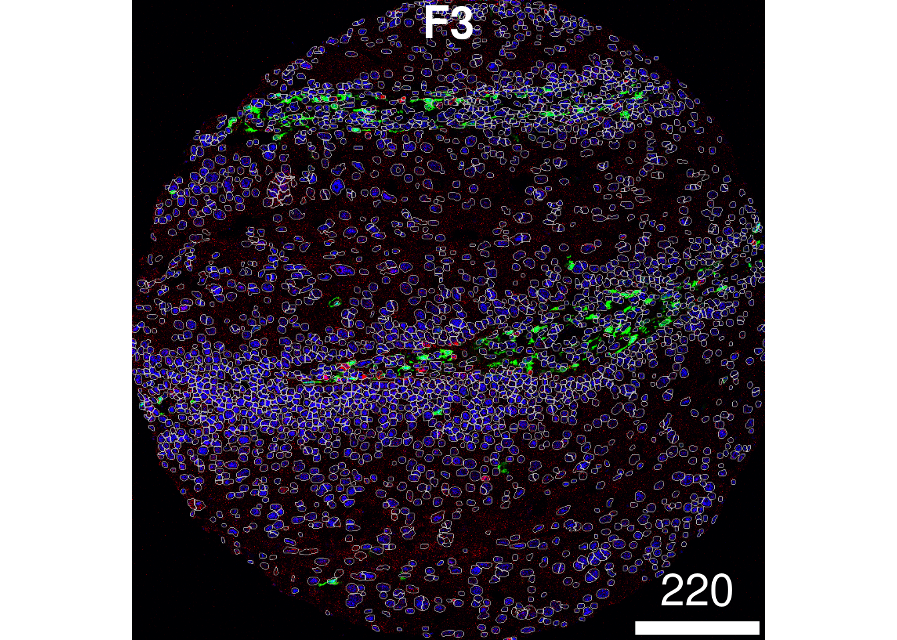
8.6 Summarise cell features.
In order to characterise the phenotypes of each of the segmented cells, measureObjects() from cytomapper will calculate the average intensity of each channel within each cell as well as a few morphological features. By default, the measureObjects() function will return a SingleCellExperiment object, where the channel intensities are stored in the counts assay and the spatial location of each cell is stored in colData in the m.cx and m.cy columns.
However, you can also specify measureObjects() to return a SpatialExperiment object by specifying return_as = "spe". As a SpatialExperiment object, the spatial location of each cell is stored in the spatialCoords slot, as m.cx and m.cy, which simplifies plotting. In this demonstration, we will return a SpatialExperiment object.
# Summarise the expression of each marker in each cell
cells <- cytomapper::measureObjects(masks,
images,
img_id = "imageID",
return_as = "spe",
BPPARAM = BPPARAM)
spatialCoordsNames(cells) <- c("x", "y")8.7 Load the clinical data
To associate features in our image with disease progression, it is important to read in information which links image identifiers to their progression status. We will do this here, making sure that our imageID match.
8.7.1 Read the clinical data
clinical <- read.csv(
system.file(
"extdata/clinicalData_TMA1_2021_AF.csv",
package = "spicyWorkflow"
)
)
rownames(clinical) <- clinical$imageID
clinical <- clinical[names(images), ]8.7.2 Put the clinical data into the colData of SingleCellExperiment
colData(cells) <- cbind(colData(cells), clinical[cells$imageID, ])save(cells, file = "spe_Ferguson_2022.rda")In case you already have your SCE object, you may only be interested in our downstream workflow. For the sake of convenience, we’ve provided capability to directly load in the SpatialExperiment (SPE) object that we’ve generated.
load(system.file("extdata/cells.rda", package = "spicyWorkflow"))8.8 Normalise the data
We should check to see if the marker intensities of each cell require some form of transformation or normalisation. The reason we do this is two-fold:
1) The intensities of images are often highly skewed, preventing any meaningful downstream analysis.
2) The intensities across different images are often different, meaning that what is considered “positive” can be different across images.
By transforming and normalising the data, we aim to reduce these two effects. Here we extract the intensities from the counts assay. Looking at CD3 which should be expressed in the majority of the T cells, the intensities are clearly very skewed, and it is difficult to see what is considered a CD3- cell, and what is a CD3+ cell.
# Plot densities of CD3 for each image.
cells |>
join_features(features = rownames(cells), shape = "wide", assay = "counts") |>
ggplot(aes(x = CD3, colour = imageID)) +
geom_density() +
theme(legend.position = "none")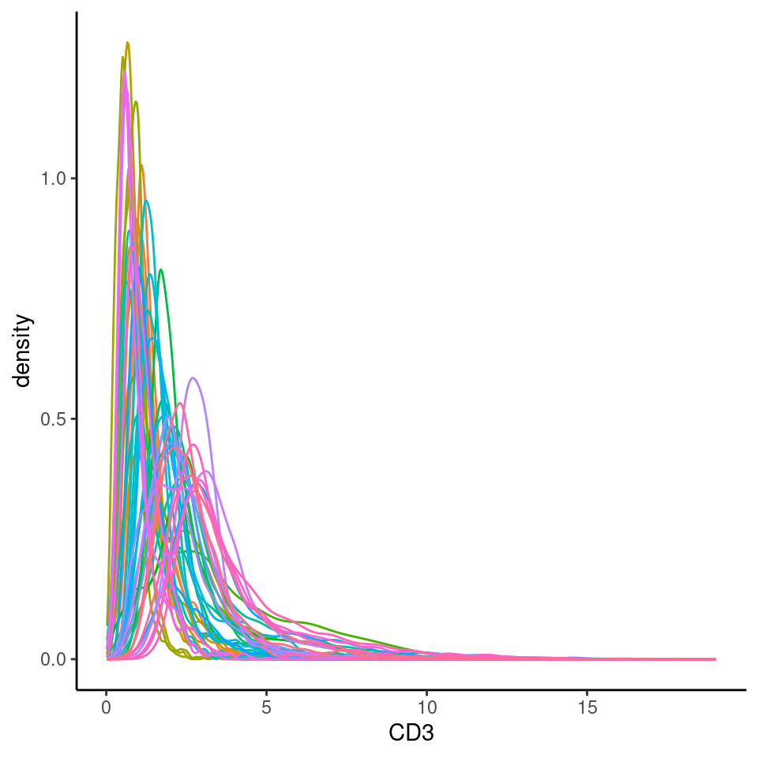
8.8.1 Dimension reduction and visualisation
As our data is stored in a SpatialExperiment we can also use scater to perform and visualise our data in a lower dimension to look for batch effects in our images. We can see that before normalisation, our UMAP shows a clear batch effect between images.
# Usually we specify a subset of the original markers which are informative to separating out distinct cell types for the UMAP and clustering.
ct_markers <- c("podoplanin", "CD13", "CD31",
"panCK", "CD3", "CD4", "CD8a",
"CD20", "CD68", "CD16", "CD14", "HLADR", "CD66a")
# ct_markers <- c("podoplanin", "CD13", "CD31",
# "panCK", "CD3", "CD4", "CD8a",
# "CD20", "CD68", "CD14", "CD16",
# "CD66a")
set.seed(51773)
# Perform dimension reduction using UMAP.
cells <- scater::runUMAP(
cells,
subset_row = ct_markers,
exprs_values = "counts"
)
# Select a subset of images to plot.
someImages <- unique(cells$imageID)[c(1, 5, 10, 20, 30, 40)]
# UMAP by imageID.
scater::plotReducedDim(
cells[, cells$imageID %in% someImages],
dimred = "UMAP",
colour_by = "imageID"
)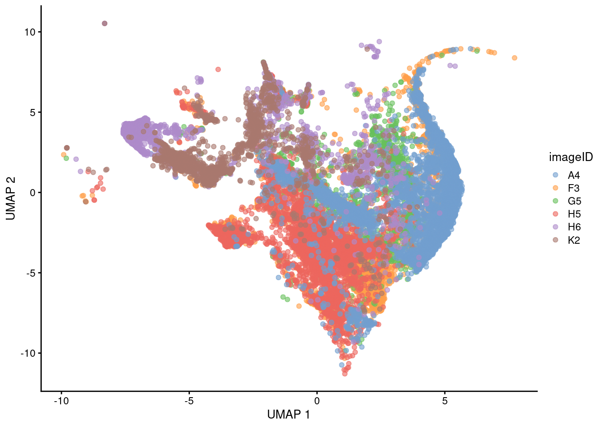
We can transform and normalise our data using the normalizeCells function. In the normalizeCells() function, we specify the following parameters. transformation is an optional argument which specifies the function to be applied to the data. We do not apply an arcsinh transformation here, as we already apply a square root transform in the simpleSeg() function. method = c("trim99", "mean", PC1") is an optional argument which specifies the normalisation method/s to be performed. Here, we: 1) Trim the 99th percentile 2) Divide by the mean 3) Remove the 1st principal component assayIn = "counts" is a required argument which specifies what the assay you’ll be taking the intensity data from is named. In our context, this is called counts.
This modified data is then stored in the norm assay by default. We can see that this normalised data appears more bimodal, not perfectly, but likely to a sufficient degree for clustering, as we can at least observe a clear CD3+ peak at 1.00, and a CD3- peak at around 0.3.
# Leave out the nuclei markers from our normalisation process.
useMarkers <- rownames(cells)[!rownames(cells) %in% c("DNA1", "DNA2", "HH3")]
# Transform and normalise the marker expression of each cell type.
cells <- normalizeCells(cells,
markers = useMarkers,
transformation = NULL,
method = c("trim99", "mean", "PC1"),
assayIn = "counts",
cores = nCores
)
# Plot densities of CD3 for each image
cells |>
join_features(features = rownames(cells), shape = "wide", assay = "norm") |>
ggplot(aes(x = CD3, colour = imageID)) +
geom_density() +
theme(legend.position = "none")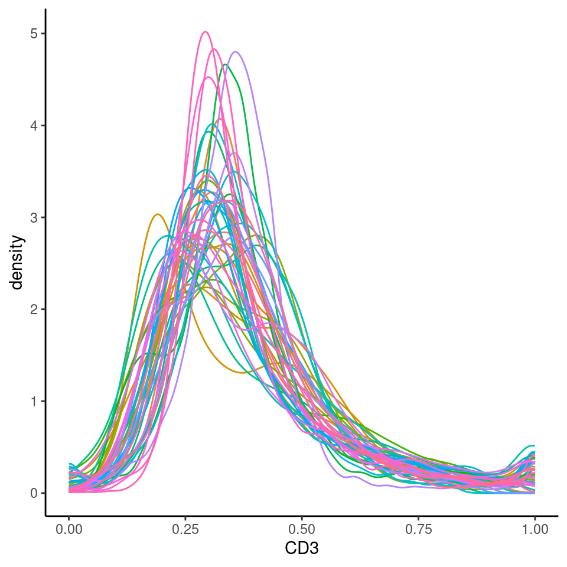
We can also appreciate through the UMAP a reduction of the batch effect we initially saw.
set.seed(51773)
# Perform dimension reduction using UMAP.
cells <- scater::runUMAP(
cells,
subset_row = ct_markers,
exprs_values = "norm",
name = "normUMAP"
)
someImages <- unique(cells$imageID)[c(1, 5, 10, 20, 30, 40)]
# UMAP by imageID.
scater::plotReducedDim(
cells[, cells$imageID %in% someImages],
dimred = "normUMAP",
colour_by = "imageID"
)
8.9 FuseSOM: Cluster cells into cell types
We can appreciate from the UMAP that there is a division of clusters, most likely representing different cell types. We next aim to empirically distinguish each cluster using our FuseSOM package for clustering.
Our FuseSOM R package can be found on bioconductor at https://www.bioconductor.org/packages/release/bioc/html/FuseSOM.html, and provides a pipeline for the clustering of highly multiplexed in situ imaging cytometry assays. This pipeline uses the Self Organising Map architecture coupled with Multiview hierarchical clustering and provides functions for the estimation of the number of clusters.
Here we cluster using the runFuseSOM function. We specify the number of clusters to identify to be numClusters = 10. We also specify a set of cell-type specific markers to use, as we want our clusters to be distinct based off cell type markers, rather than markers which might pick up a transitioning cell state.
8.9.1 Perform the clustering
# Set seed.
set.seed(51773)
# Generate SOM and cluster cells into 10 groups
cells <- runFuseSOM(
cells,
markers = ct_markers,
assay = "norm",
numClusters = 10
)You have provided a dataset of class SpatialExperimentEverything looks good. Now running the FuseSOM algorithmNow Generating the Self Organizing Map GridOptimal Grid Size is: 8Now Running the Self Organizing Map ModelNow Clustering the PrototypesLoading required namespace: fastclusterNow Mapping Clusters to the Original DataThe Prototypes have been Clustered and Mapped SuccessfullyThe FuseSOM algorithm has completed successfullyWe can also observe how reasonable our choice of k = 10 was, using the estimateNumCluster() and optiPlot() functions. Here we examine the Gap method, but others such as Silhouette and Within Cluster Distance are also available. We can see that there are elbow points in the gap statistic at k = 7, k = 10, and k = 11. We’ve specified k = 10, striking a good balance between the number of clusters and the gap statistic.
cells <- estimateNumCluster(cells, kSeq = 2:30)You have provided a dataset of class: SpatialExperimentNow Computing the Number of Clusters using Discriminant AnalysisNow Computing The Number Of Clusters Using Distance AnalysisoptiPlot(cells, method = "gap")You have provided a dataset of class: SpatialExperiment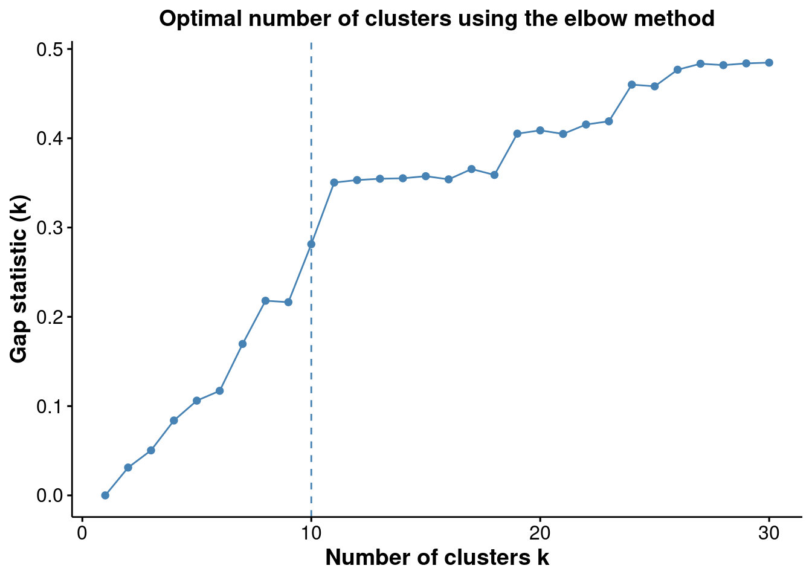
8.9.2 Attempt to interpret the phenotype of each cluster
We can begin the process of understanding what each of these cell clusters are by using the plotGroupedHeatmap function from scater. At the least, here we can see we capture all the major immune populations that we expect to see, including the CD4 and CD8 T cells, the CD20+ B cells, the CD68+ myeloid populations, the CD66+ granulocytes, the podoplanin+ epithelial cells, and the panCK+ tumour cells.
# Visualise marker expression in each cluster.
scater::plotGroupedHeatmap(
cells,
features = ct_markers,
group = "clusters",
exprs_values = "norm",
center = TRUE,
scale = TRUE,
zlim = c(-3, 3),
cluster_rows = FALSE,
block = "clusters"
)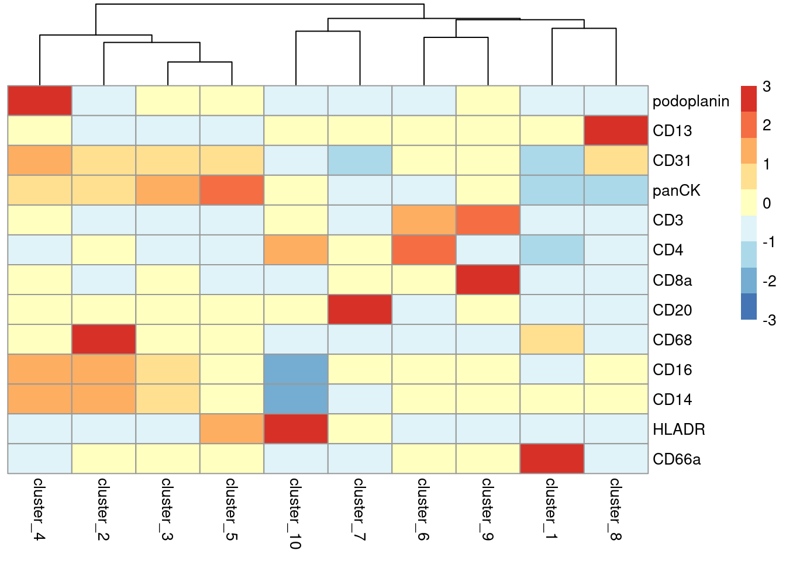
Given domain-specific knowledge of the tumour-immune landscape, we can go ahead and annotate these clusters as cell types given their expression profiles.
cells <- cells |>
mutate(cellType = case_when(
clusters == "cluster_1" ~ "GC", # Granulocytes
clusters == "cluster_2" ~ "MC", # Myeloid cells
clusters == "cluster_3" ~ "SC", # Squamous cells
clusters == "cluster_4" ~ "EP", # Epithelial cells
clusters == "cluster_5" ~ "SC", # Squamous cells
clusters == "cluster_6" ~ "TC_CD4", # CD4 T cells
clusters == "cluster_7" ~ "BC", # B cells
clusters == "cluster_8" ~ "EC", # Endothelial cells
clusters == "cluster_9" ~ "TC_CD8", # CD8 T cells
clusters == "cluster_10" ~ "DC" # Dendritic cells
))New names:
New names:
• `UMAP1` -> `UMAP1...1`
• `UMAP2` -> `UMAP2...2`
• `UMAP1` -> `UMAP1...3`
• `UMAP2` -> `UMAP2...4`We might also be interested in how these cell types are distributed on the images themselves. Here we examine the distribution of clusters on image F3, noting the healthy epithelial and endothelial structures surrounded by tumour cells.
reducedDim(cells, "spatialCoords") <- spatialCoords(cells)
cells |>
filter(imageID == "F3") |>
plotReducedDim("spatialCoords", colour_by = "cellType")New names:
• `UMAP1` -> `UMAP1...1`
• `UMAP2` -> `UMAP2...2`
• `UMAP1` -> `UMAP1...3`
• `UMAP2` -> `UMAP2...4`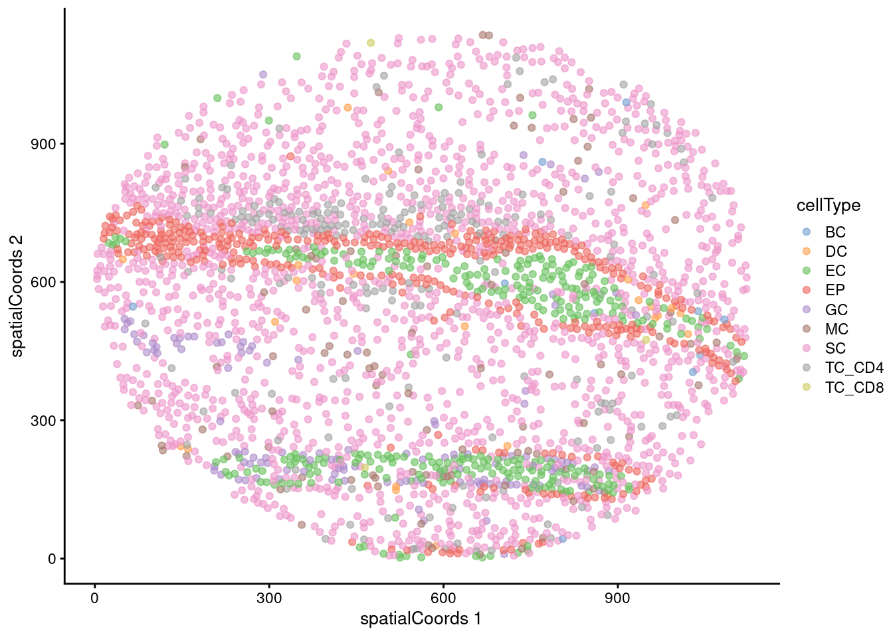
8.9.3 Check cell type frequencies
We find it always useful to check the number of cells in each cluster. Here we can see that cluster 10 contains lots of (most likely tumour - high expression of panCK and non-consistent expression of other markers) cells and cluster 4 contains very few cells.
# Check cell type frequencies.
cells$cellType |>
table() |>
sort()
DC BC MC GC TC_CD8 TC_CD4 EC EP SC
2411 4322 5283 7993 8534 11753 14159 14170 87288 We can also use the UMAP we computed earlier to visualise our data in a lower dimension and see how well our annotated cell types cluster out.
# UMAP by cell type
scater::plotReducedDim(
cells[, cells$imageID %in% someImages],
dimred = "normUMAP",
colour_by = "cellType"
)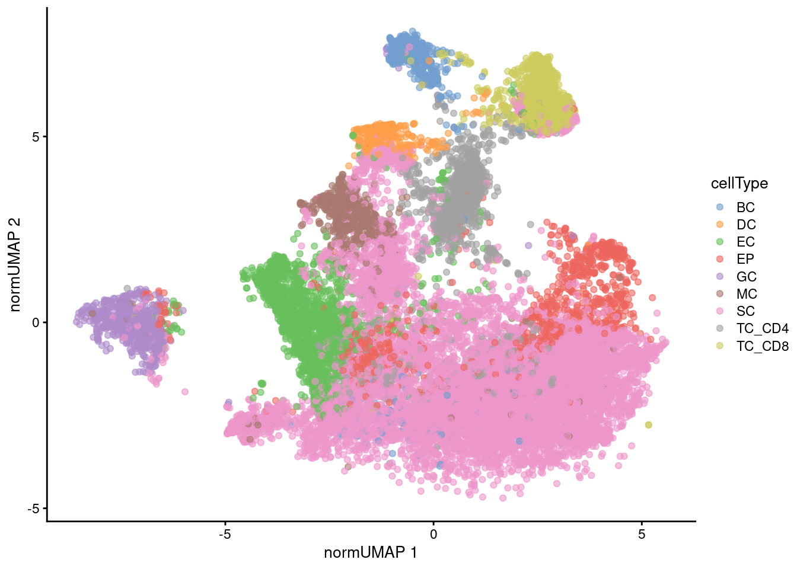
8.9.4 Testing for association between the proportion of each cell type and progressor status
We recommend using a package such as diffcyt for testing for changes in abundance of cell types. However, the colTest function allows us to quickly test for associations between the proportions of the cell types and progression status using either Wilcoxon rank sum tests or t-tests. Here we see a p-value less than 0.05, but this does not equate to a small FDR.
# Perform simple student's t-tests on the columns of the proportion matrix.
testProp <- colTest(cells,
condition = "group",
feature = "cellType",
type = "ttest")
head(testProp) mean in group NP mean in group P tval.t pval adjPval cluster
TC_CD8 0.056 0.033 2.70 0.011 0.099 TC_CD8
MC 0.033 0.040 -1.70 0.099 0.400 MC
EC 0.098 0.085 1.50 0.160 0.400 EC
BC 0.026 0.016 1.30 0.190 0.400 BC
SC 0.560 0.590 -1.30 0.220 0.400 SC
TC_CD4 0.074 0.084 -0.94 0.360 0.540 TC_CD4Let’s examine one of these clusters using our getProp() function from spicyR, which conveniently transforms our proportions into a feature matrix of images by cell type, enabling convenient downstream classification or analysis.
Next, let’s visualise how different the proportions are
boxplot.
prop <- getProp(cells, feature = "cellType")
prop[1:5, 1:5] BC DC EC EP GC
A2 0.01501502 0.00000000 0.09129129 0.04684685 0.031831832
A3 0.01854193 0.00000000 0.09334176 0.01769912 0.001474926
A4 0.01196581 0.00322887 0.07901235 0.02792023 0.003988604
A5 0.02135513 0.03190087 0.07882942 0.15344055 0.140522014
A6 0.01783492 0.01824969 0.08710079 0.14765657 0.125259229It appears that the CD8 T cells are the most differentially abundant cell type across our progressors and non-progressors. A boxplot visualisation of CD8 T cell proportion clearly shows that progressors have a lower proportion of CD8 T cells in the tumour core.
clusterToUse <- rownames(testProp)[1]
prop |>
select(all_of(clusterToUse)) |>
tibble::rownames_to_column("imageID") |>
left_join(clinical, by = "imageID") |>
ggplot(aes(x = group, y = .data[[clusterToUse]], fill = group)) +
geom_boxplot()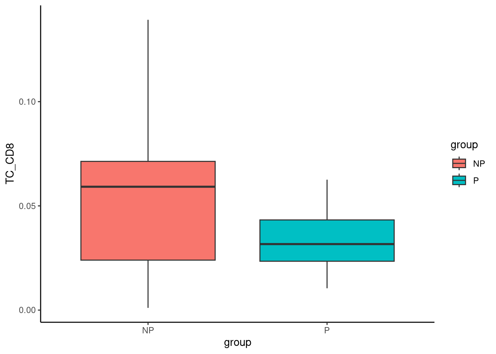
NB: If you have already clustered and annotated your cells, you may only be interested in our downstream analysis capabilities, looking into identifying localisation (spicyR), cell regions (lisaClust), and cell-cell interactions (SpatioMark & Kontextual). Therefore, for the sake of convenience, we’ve provided capability to directly load in the SpatialExperiment (SPE) object that we’ve generated up to this point, complete with clusters and normalised intensities.
load(system.file("extdata/computed_cells.rda", package = "spicyWorkflow"))8.10 spicyR: Test spatial relationships
Our spicyR package is available on bioconductor on https://www.bioconductor.org/packages/devel/bioc/html/spicyR.html and provides a series of functions to aid in the analysis of both immunofluorescence and imaging mass cytometry data as well as other assays that can deeply phenotype individual cells and their spatial location. Here we use the spicy() function to test for changes in the spatial relationships between pair-wise combinations of cells.
Put simply, spicyR uses the L-function to determine localisation or dispersion between cell types. The L-function is an arbitrary measure of “closeness” between points, with greater values suggesting increased localisation, and lower values suggesting dispersion.
Here, we quantify spatial relationships using a combination of 10 radii from 10 to 100 by specifying Rs = 1:10*10 and mildly account for some global tissue structure using sigma = 50. Further information on how to optimise these parameters can be found in the vignette and the spicyR paper.
spicyTest <- spicy(cells,
condition = "group",
cellTypeCol = "cellType",
imageIDCol = "imageID",
Rs = 1:10*10,
sigma = 50,
BPPARAM = BPPARAM)Coercing condition into factor. Using group = NP as base comparison group. If
this is not the desired base group, please convert cells$group into a factor
and change the order of levels(cells$group) so that the base group is at index
1.topPairs(spicyTest, n = 10) intercept coefficient p.value adj.pvalue from to
BC__EC -1.1346644 8.304020 0.03391529 0.6931721 BC EC
EC__BC -1.5909700 7.919971 0.04134661 0.6931721 EC BC
GC__TC_CD4 -7.6316673 11.005639 0.05047096 0.6931721 GC TC_CD4
TC_CD4__GC -7.5406782 11.077602 0.05709461 0.6931721 TC_CD4 GC
TC_CD4__EP -0.7117393 4.853317 0.07261120 0.6931721 TC_CD4 EP
EP__TC_CD4 -0.7070918 4.820661 0.07510118 0.6931721 EP TC_CD4
EP__TC_CD8 -3.1445464 5.779536 0.08047994 0.6931721 EP TC_CD8
TC_CD8__EP -2.9313474 5.688420 0.09522058 0.6931721 TC_CD8 EP
TC_CD4__EC 3.1984391 4.366122 0.09716499 0.6931721 TC_CD4 EC
EC__TC_CD4 3.1052061 4.263971 0.10461424 0.6931721 EC TC_CD4We can visualise these tests using signifPlot where we observe that cell type pairs appear to become less attractive (or avoid more) in the progression sample.
# Visualise which relationships are changing the most.
signifPlot(
spicyTest,
breaks = c(-1.5, 1.5, 0.5)
)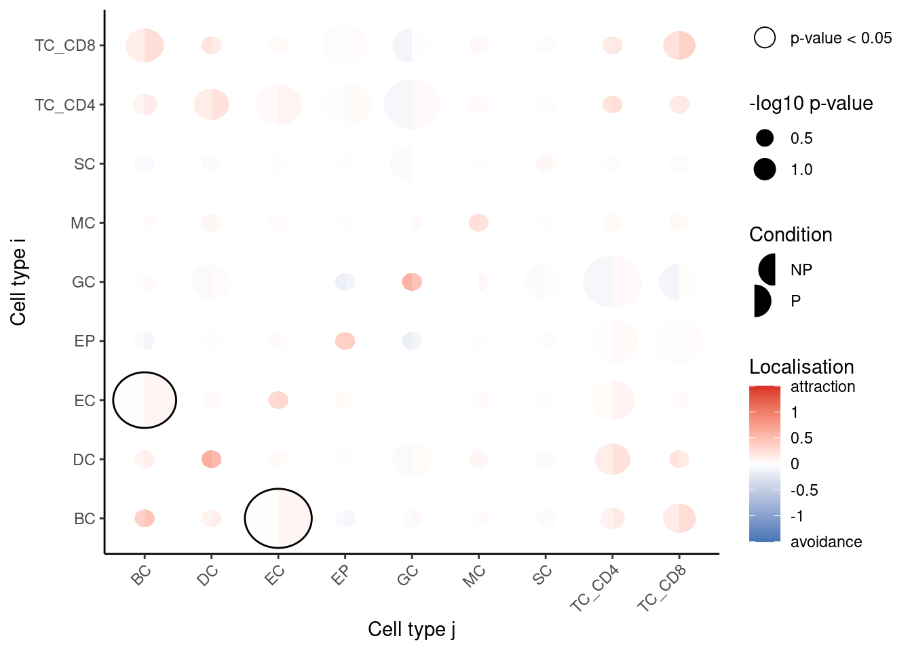
spicyR also has functionality for plotting out individual pairwise relationships. We can first try look into whether the SC tumour cell type localises with the GC granular cell type, and whether this localisation affects progression vs non-progression of the tumour.
spicyBoxPlot(spicyTest,
from = "SC",
to = "GC")Warning: Removed 1 row containing non-finite outside the scale range
(`stat_boxplot()`).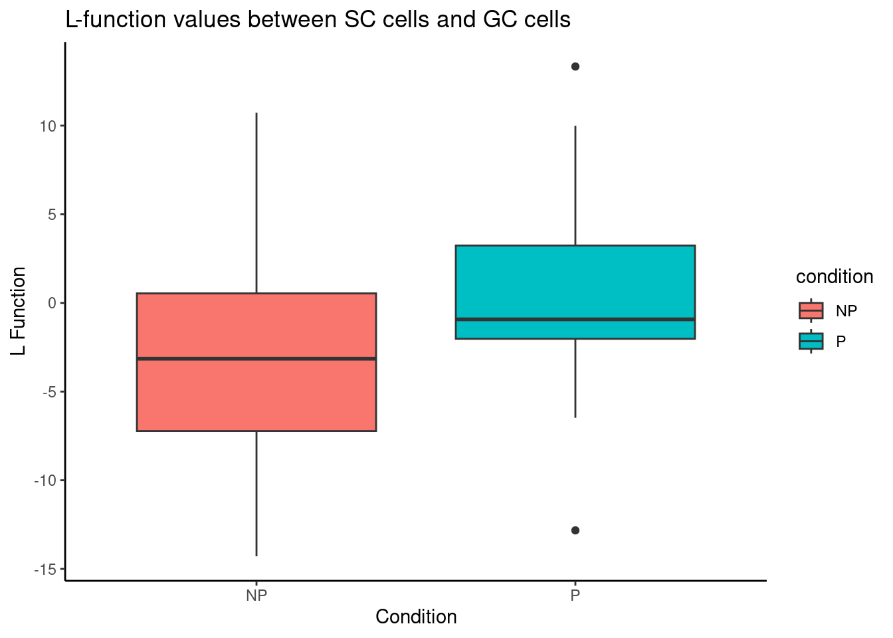
Alternatively, we can look at the most differentially localised relationship between progressors and non-progressors by specifying rank = 1.
spicyBoxPlot(spicyTest,
rank = 1)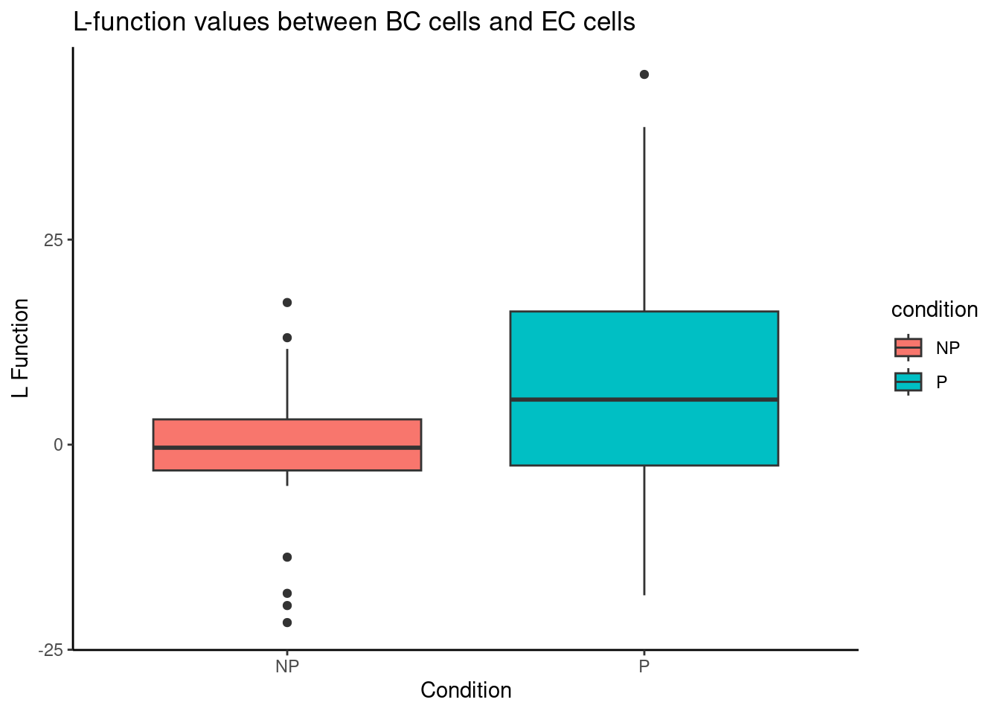
8.11 lisaClust: Find cellular neighbourhoods
Our lisaClust package (https://www.bioconductor.org/packages/devel/bioc/html/lisaClust.html)[https://www.bioconductor.org/packages/devel/bioc/html/lisaClust.html] provides a series of functions to identify and visualise regions of tissue where spatial associations between cell-types is similar. This package can be used to provide a high-level summary of cell-type co-localisation in multiplexed imaging data that has been segmented at a single-cell resolution. Here we use the lisaClust function to clusters cells into 5 regions with distinct spatial ordering.
set.seed(51773)
# Cluster cells into spatial regions with similar composition.
cells <- lisaClust(
cells,
k = 4,
sigma = 50,
cellType = "cellType",
BPPARAM = BPPARAM
)Generating local L-curves.8.11.1 Region - cell type enrichment heatmap
We can try to interpret which spatial orderings the regions are quantifying using the regionMap function. This plots the frequency of each cell type in a region relative to what you would expect by chance. We can see here that our regions have neatly separated according to biological milieu, with region 1 and 2 representing our immune cell regions, region 3 representing our tumour cells, and region 4 representing our healthy epithelial and endothelial cells.
# Visualise the enrichment of each cell type in each region
regionMap(cells, cellType = "cellType", limit = c(0.2, 2))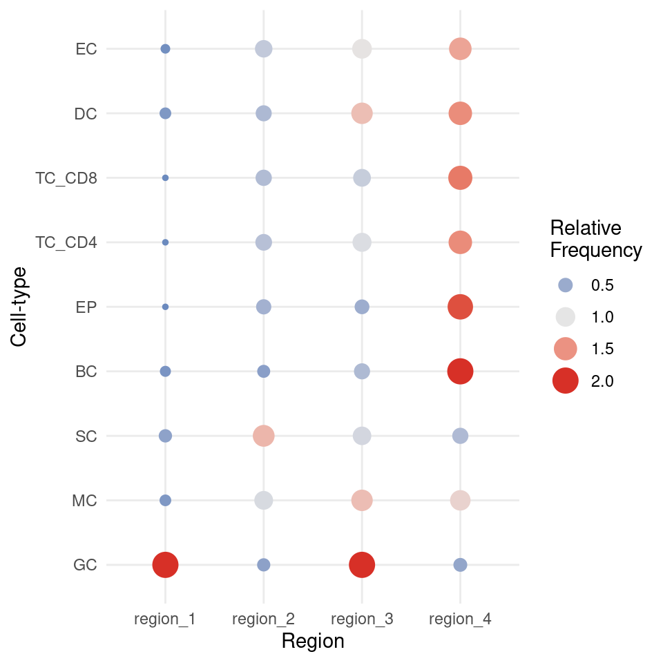
8.11.2 Visualise regions
By default, these identified regions are stored in the regions column in the colData of our object. We can quickly examine the spatial arrangement of these regions using ggplot on image F3, where we can see the same division of immune, healthy, and tumour tissue that we identified in our regionMap.
cells |>
filter(imageID == "F3") |>
plotReducedDim("spatialCoords", colour_by = "region")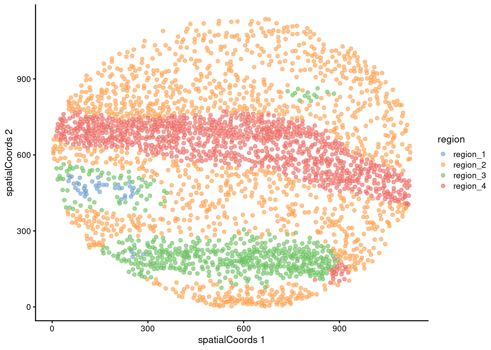
While much slower, we have also implemented a function for overlaying the region information as a hatching pattern so that the information can be viewed simultaneously with the cell type calls.
# Use hatching to visualise regions and cell types.
hatchingPlot(
cells,
useImages = "F3",
cellType = "cellType",
nbp = 300
)Concave windows are temperamental. Try choosing values of window.length > and < 1 if you have problems.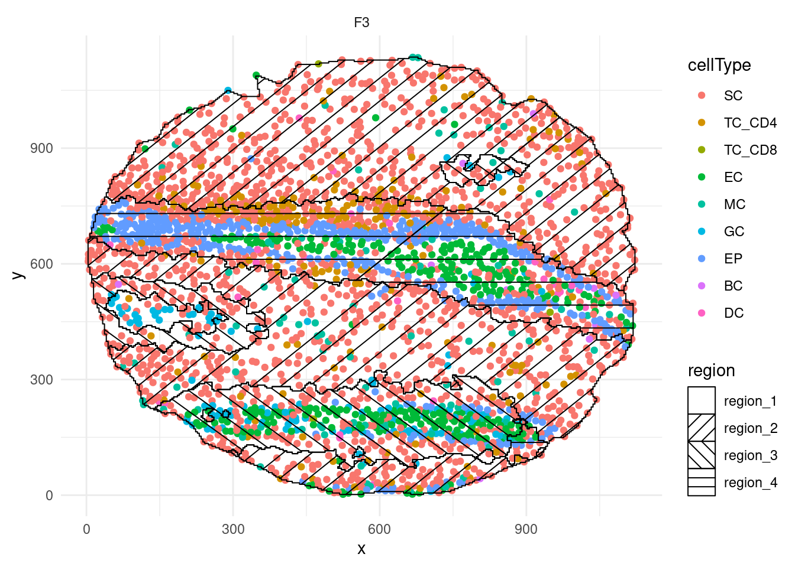
8.11.3 Test for association with progression
Similar to cell type proportions, we can quickly use the colTest function to test for associations between the proportions of cells in each region and progression status by specifying feature = "region".
# Test if the proportion of each region is associated
# with progression status.
testRegion <- colTest(
cells,
feature = "region",
condition = "group",
type = "ttest"
)
testRegion mean in group NP mean in group P tval.t pval adjPval cluster
region_1 0.022 0.0079 1.90 0.066 0.20 region_1
region_3 0.092 0.1300 -1.70 0.100 0.20 region_3
region_4 0.340 0.3300 0.63 0.530 0.71 region_4
region_2 0.540 0.5400 0.20 0.840 0.84 region_28.12 Statial: Identify changes in cell state.
Our Statial package (https://www.bioconductor.org/packages/release/bioc/html/Statial.html) provides a suite of functions (Kontextual) for robust quantification of cell type localisation which are invariant to changes in tissue structure. In addition, we provide a suite of functions (SpatioMark) for uncovering continuous changes in marker expression associated with varying levels of localisation.
8.12.1 SpatioMark: Continuous changes in marker expression associated with varying levels of localisation.
The first step in analysing these changes is to calculate the spatial proximity (getDistances) of each cell to every cell type. These values will then be stored in the reducedDims slot of the SingleCellExperiment object under the names distances. SpatioMark also provides functionality to look into proximal cell abundance using the getAbundance() function, which is further explored within the Statial package vignette.
cells$m.cx <- spatialCoords(cells)[,"x"]
cells$m.cy <- spatialCoords(cells)[,"y"]
cells <- getDistances(cells,
maxDist = 200,
nCores = nCores,
cellType = "cellType",
spatialCoords = c("m.cx", "m.cy")
)We can then visualise an example image, specified with image = "F3" and a particular marker interaction with cell type localisation. To visualise these changes, we specify two cell types with the from and to parameters, and a marker with the marker parameter (cell-cell-marker interactions). Here, we specify the changes in the marker podoplanin in SC tumour cells as its localisation to EP epithelial cells increases or decreases, where we can observe that podoplanin decreases in tumour cells as its distance to the central cluster of epithelial cells increases.
p <- plotStateChanges(
cells = cells,
cellType = "cellType",
spatialCoords = c("m.cx", "m.cy"),
type = "distances",
image = "F3",
from = "SC",
to = "EP",
marker = "podoplanin",
size = 1,
shape = 19,
interactive = FALSE,
plotModelFit = FALSE,
method = "lm"
)
p$image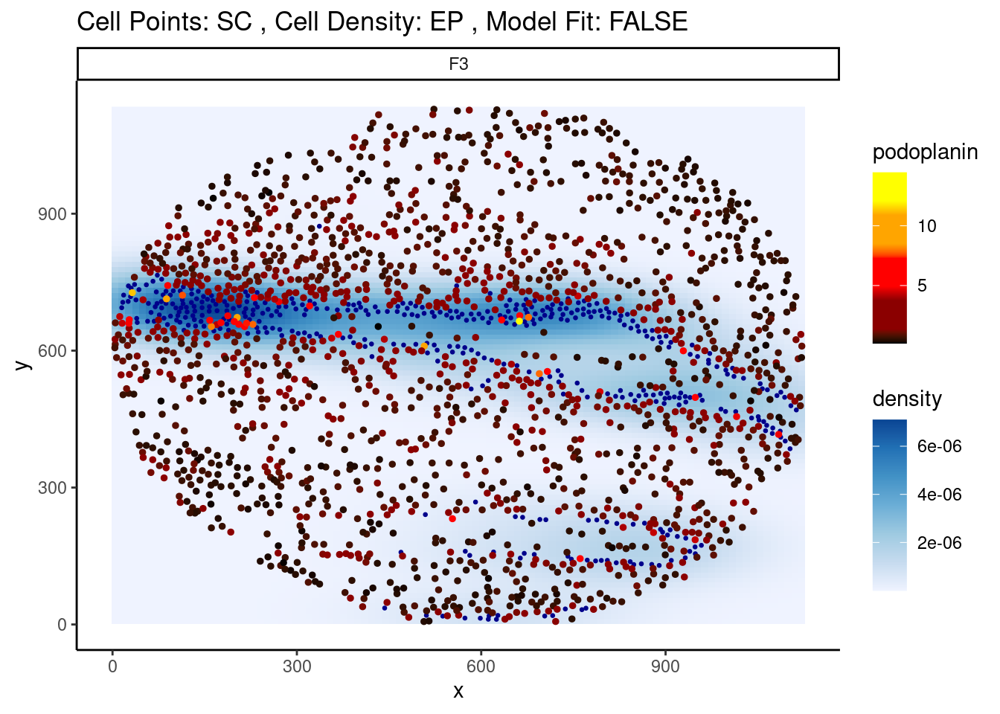
$scatter`geom_smooth()` using formula = 'y ~ x'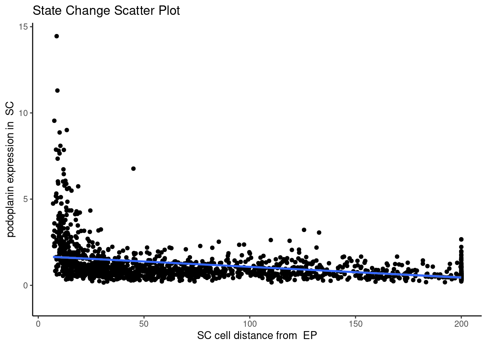
SpatioMark aims to holistically uncover all such significant relationships by looking at all interactions across all images. The calcStateChanges function provided by Statial can be expanded for this exact purpose - by not specifying cell types, a marker, or an image, calcStateChanges will examine the most significant correlations between distance and marker expression across the entire dataset.
state_dist <- calcStateChanges(
cells = cells,
cellType = "cellType",
type = "distances",
assay = 2,
nCores = nCores,
minCells = 100
)
head(state_dist[state_dist$imageID == "F3",], n = 10) imageID primaryCellType otherCellType marker coef tval
51990 F3 SC EP podoplanin -0.0006911103 -16.90036
23703 F3 EP GC CXCR3 0.0012103305 15.04988
23704 F3 EP GC pSTAT3 0.0012299816 14.79933
51978 F3 SC GC PDL2 0.0008802428 13.12601
23669 F3 EP MC CCR7 0.0011476888 13.32900
23595 F3 EP TC_CD8 CXCR3 0.0016741880 12.95156
51981 F3 SC GC ICOS 0.0005186181 11.75830
23696 F3 EP GC CADM1 0.0011398625 12.18028
11426 F3 EC GC CD31 0.0010070252 12.40866
23650 F3 EP EC TIM3 0.0033539928 12.05028
pval fdr
51990 4.203881e-59 9.004712e-57
23703 8.041089e-41 8.191646e-39
23704 8.916789e-40 8.712976e-38
51978 1.839014e-37 1.637728e-35
23669 9.360248e-34 6.863845e-32
23595 3.025912e-32 2.085497e-30
51981 1.113579e-30 7.070268e-29
23696 3.239532e-29 1.903862e-27
11426 4.839241e-29 2.825645e-27
23650 1.030900e-28 5.930114e-27The results from our SpatioMark outputs can be converted from a data.frame to a matrix, using the prepMatrix() function. Note, the choice of extracting either the t-statistic or the coefficient of the linear regression can be specified using the column = "tval" parameter, with the coefficient being the default extracted parameter. We can see that with SpatioMark, we get some features which are significant after adjusting for FDR.
# Preparing outcome vector
outcome <- cells$group[!duplicated(cells$imageID)]
names(outcome) <- cells$imageID[!duplicated(cells$imageID)]
# Preparing features for Statial
distMat <- prepMatrix(state_dist)
distMat <- distMat[names(outcome), ]
# Remove some very small values
distMat <- distMat[, colMeans(abs(distMat) > 0.0001) > .8]
survivalResults <- colTest(distMat, outcome, type = "ttest")
head(survivalResults) mean in group NP mean in group P tval.t pval adjPval
EC__EC__CD13 -0.00240 -9.6e-04 -3.6 0.00086 0.27
SC__SC__VISTA -0.00470 -1.7e-03 -3.3 0.00190 0.27
SC__TC_CD4__CXCR3 -0.00015 8.8e-04 -3.4 0.00230 0.27
SC__EP__Ki67 -0.00037 -7.3e-05 -3.2 0.00260 0.27
EC__SC__CD68 0.00029 -3.9e-04 3.2 0.00300 0.27
SC__BC__DNA1 0.02600 -1.4e-01 3.0 0.00480 0.27
cluster
EC__EC__CD13 EC__EC__CD13
SC__SC__VISTA SC__SC__VISTA
SC__TC_CD4__CXCR3 SC__TC_CD4__CXCR3
SC__EP__Ki67 SC__EP__Ki67
EC__SC__CD68 EC__SC__CD68
SC__BC__DNA1 SC__BC__DNA18.12.2 Kontextual: Robust quantification of cell type localisation which is invariant to changes in tissue structure
Kontextual is a method to evaluate the localisation relationship between two cell types in an image. Kontextual builds on the L-function by contextualising the relationship between two cell types in reference to the typical spatial behaviour of a \(3^{rd}\) cell type/population. By taking this approach, Kontextual is invariant to changes in the window of the image as well as tissue structures which may be present.
The definitions of cell types and cell states are somewhat ambiguous, cell types imply well defined groups of cells that serve different roles from one another, on the other hand cell states imply that cells are a dynamic entity which cannot be discretised, and thus exist in a continuum. For the purposes of using Kontextual we treat cell states as identified clusters of cells, where larger clusters represent a “parent” cell population, and finer sub-clusters representing a “child” cell population. For example a CD4 T cell may be considered a child to a larger parent population of Immune cells. Kontextual thus aims to see how a child population of cells deviate from the spatial behaviour of their parent population, and how that influences the localisation between the child cell state and another cell state.
8.12.2.1 Cell type hierarchy
A key input for Kontextual is an annotation of cell type hierarchies. We will need these to organise all the cells present into cell state populations or clusters, e.g. all the different B cell types are put in a vector called bcells.
Here, we use the treeKor bioconductor package treekoR to define these hierarchies in a data driven way.
fergusonTree <- treekoR::getClusterTree(t(assay(cells, "norm")),
cells$cellType,
hierarchy_method="hopach")
parent1 <- c("TC_CD8", "TC_CD4", "DC")
parent2 <- c("BC", "GC")
parent3 <- c(parent1, parent2)
parent4 <- c("MC", "EP", "SC")
parent5 <- c(parent4, "EC")
all = c(parent1, parent2, parent3, parent4, parent5)
treeDf = Statial::parentCombinations(all, parent1, parent2, parent3, parent4, parent5)
fergusonTree$clust_tree |> plot()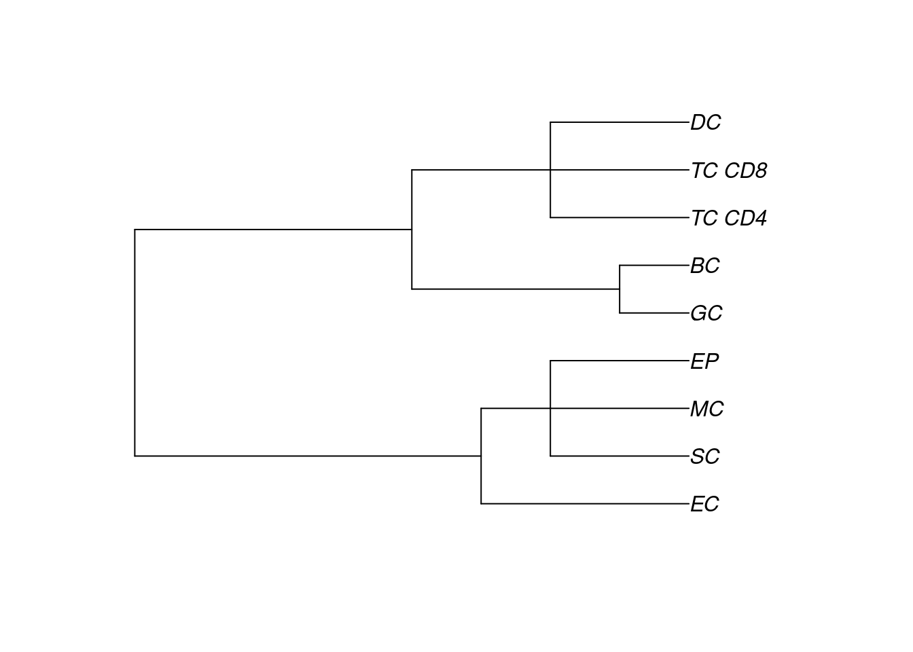
Kontextual accepts a SingleCellExperiment object, a single image, or list of images from a SingleCellExperiment object, which gets passed into the cells argument. Here, we’ve specified Kontextual to perform calculations on all pairwise combinations for every cluster using the parentCombinations() function to create the treeDf dataframe which we’ve specified in the parentDf parameter. The argument r will specify the radius which the cell relationship will be evaluated on. Kontextual supports parallel processing, the number of cores can be specified using the cores argument. Kontextual can take a single value or multiple values for each argument and will test all combinations of the arguments specified.
We can calculate all pairwise relationships across all images for a single radius.
kontext <- Kontextual(
cells = cells,
cellType = "cellType",
spatialCoords = c("m.cx", "m.cy"),
parentDf = treeDf,
r = 50,
cores = nCores
)Again, we can use the same colTest() to quickly test for associations between the Kontextual values and progression status using either Wilcoxon rank sum tests or t-tests. Similar to SpatioMark, we can specify using either the original L-function by specifying column = "original" in our prepMatrix() function.
# Converting Kontextual result into data matrix
kontextMat <- prepMatrix(kontext)
# Replace NAs with 0
kontextMat[is.na(kontextMat)] <- 0
survivalResults <- spicyR::colTest(kontextMat, outcome, type = "ttest")
head(survivalResults) mean in group NP mean in group P tval.t pval adjPval
SC__BC__parent2 4.9 -3.80 3.9 0.00039 0.053
SC__GC__parent3 -3.7 2.60 -3.4 0.00140 0.095
SC__TC_CD4__parent3 2.9 0.24 2.7 0.00920 0.420
TC_CD4__EC__parent5 4.0 10.00 -2.5 0.01700 0.520
BC__TC_CD8__parent3 -5.5 3.10 -2.2 0.03100 0.520
SC__BC__parent3 1.1 -3.80 2.2 0.03300 0.520
cluster
SC__BC__parent2 SC__BC__parent2
SC__GC__parent3 SC__GC__parent3
SC__TC_CD4__parent3 SC__TC_CD4__parent3
TC_CD4__EC__parent5 TC_CD4__EC__parent5
BC__TC_CD8__parent3 BC__TC_CD8__parent3
SC__BC__parent3 SC__BC__parent38.13 ClassifyR: Classification
Our ClassifyR package, https://github.com/SydneyBioX/ClassifyR, formalises a convenient framework for evaluating classification in R. We provide functionality to easily include four key modelling stages; Data transformation, feature selection, classifier training and prediction; into a cross-validation loop. Here we use the crossValidate function to perform 100 repeats of 5-fold cross-validation to evaluate the performance of a random forest applied to five quantifications of our IMC data; 1) Cell type proportions 2) Cell type localisation from spicyR 3) Region proportions from lisaClust 4) Cell type localisation in reference to a parent cell type from Kontextual 5) Cell changes in response to proximal changes from SpatioMark
# Create list to store data.frames
data <- list()
# Add proportions of each cell type in each image
data[["Proportions"]] <- getProp(cells, "cellType")
# Add pair-wise associations
spicyMat <- bind(spicyTest)
spicyMat[is.na(spicyMat)] <- 0
spicyMat <- spicyMat |>
select(!condition) |>
tibble::column_to_rownames("imageID")
data[["SpicyR"]] <- spicyMat
# Add proportions of each region in each image
# to the list of dataframes.
data[["LisaClust"]] <- getProp(cells, "region")
# Add SpatioMark features
data[["SpatioMark"]] <- distMat
# Add Kontextual features
data[["Kontextual"]] <- kontextMat# Set seed
set.seed(51773)
# Perform cross-validation of a random forest model
# with 100 repeats of 5-fold cross-validation.
cv <- crossValidate(
measurements = data,
outcome = outcome,
classifier = "randomForest",
nFolds = 5,
nRepeats = 50,
nCores = nCores
)8.13.1 Visualise cross-validated prediction performance
Here we use the performancePlot function to assess the AUC from each repeat of the 5-fold cross-validation. We see that the lisaClust regions appear to capture information which is predictive of progression status of the patients.
# Calculate AUC for each cross-validation repeat and plot.
performancePlot(
cv,
metric = "AUC",
characteristicsList = list(x = "Assay Name"),
orderingList = list("Assay Name" = c("Proportions", "SpicyR", "LisaClust", "Kontextual", "SpatioMark"))
)Warning in .local(results, ...): AUC not found in all elements of results.
Calculating it now.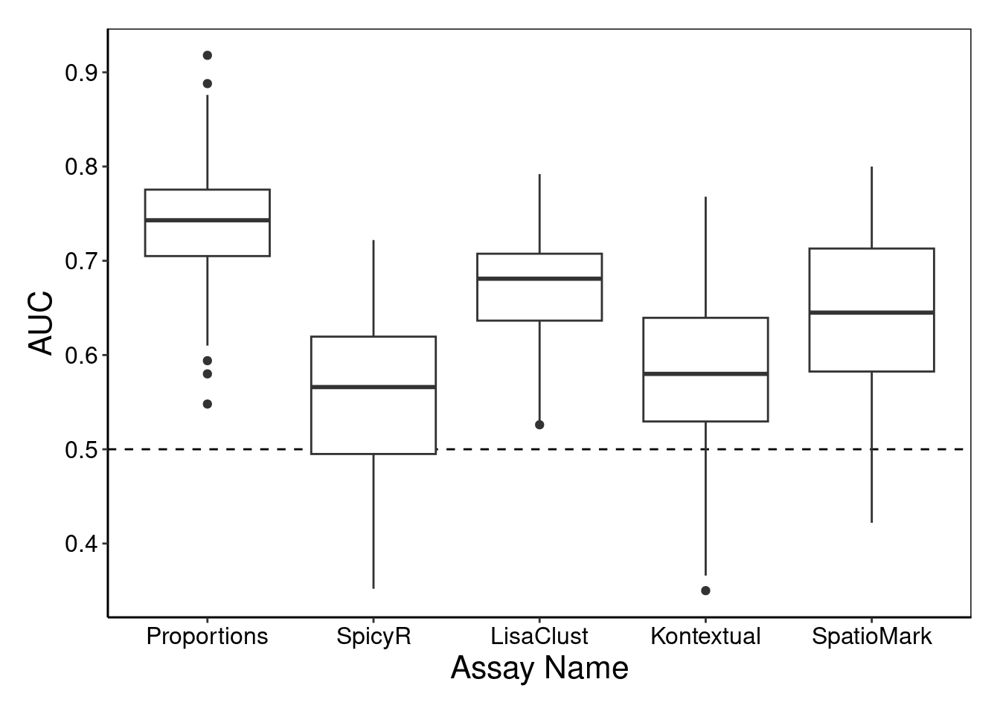
We can also visualise which features were good at classifying which patients using the sampleMetricMap() function from ClassifyR.
samplesMetricMap(cv)Warning in .local(results, ...): Sample Accuracy not found in all elements of
results. Calculating it now.Warning: Removed 2 rows containing missing values or values outside the scale range
(`geom_tile()`).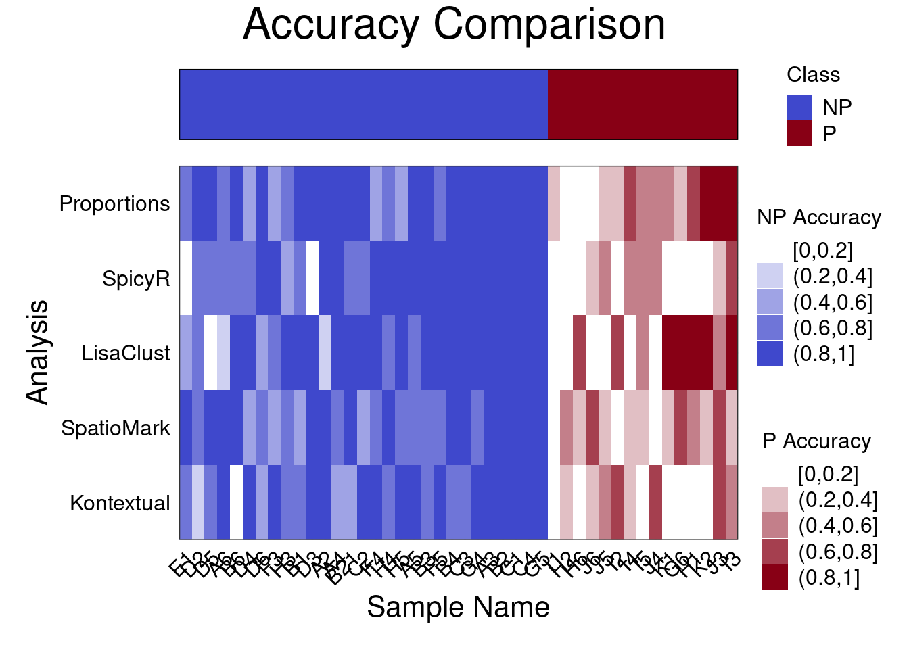
TableGrob (2 x 1) "arrange": 2 grobs
z cells name grob
1 1 (2-2,1-1) arrange gtable[layout]
2 2 (1-1,1-1) arrange text[GRID.text.1936]8.14 Summary
Here we have used a pipeline of our spatial analysis R packages to demonstrate an easy way to segment, cluster, normalise, quantify and classify high dimensional in situ cytometry data all within R.
8.15 sessionInfo
sessionInfo()R version 4.4.1 (2024-06-14)
Platform: x86_64-pc-linux-gnu
Running under: Debian GNU/Linux 12 (bookworm)
Matrix products: default
BLAS: /usr/lib/x86_64-linux-gnu/openblas-pthread/libblas.so.3
LAPACK: /usr/lib/x86_64-linux-gnu/openblas-pthread/libopenblasp-r0.3.21.so; LAPACK version 3.11.0
locale:
[1] LC_CTYPE=C.UTF-8 LC_NUMERIC=C LC_TIME=C.UTF-8
[4] LC_COLLATE=C.UTF-8 LC_MONETARY=C.UTF-8 LC_MESSAGES=C.UTF-8
[7] LC_PAPER=C.UTF-8 LC_NAME=C LC_ADDRESS=C
[10] LC_TELEPHONE=C LC_MEASUREMENT=C.UTF-8 LC_IDENTIFICATION=C
time zone: Australia/Sydney
tzcode source: system (glibc)
attached base packages:
[1] stats4 stats graphics grDevices utils datasets methods
[8] base
other attached packages:
[1] SpatialDatasets_1.4.0 ExperimentHub_2.14.0
[3] AnnotationHub_3.14.0 BiocFileCache_2.14.0
[5] dbplyr_2.5.0 SpatialExperiment_1.16.0
[7] ttservice_0.4.1 tidyr_1.3.1
[9] tidySingleCellExperiment_1.16.0 Statial_1.8.0
[11] lisaClust_1.14.4 ClassifyR_3.10.0
[13] survival_3.7-0 BiocParallel_1.40.0
[15] MultiAssayExperiment_1.32.0 generics_0.1.3
[17] spicyR_1.18.0 scater_1.34.0
[19] scuttle_1.16.0 ggpubr_0.6.0
[21] FuseSOM_1.8.0 simpleSeg_1.8.0
[23] ggplot2_3.5.1 dplyr_1.1.4
[25] cytomapper_1.18.0 SingleCellExperiment_1.28.1
[27] SummarizedExperiment_1.36.0 Biobase_2.66.0
[29] GenomicRanges_1.58.0 GenomeInfoDb_1.42.0
[31] IRanges_2.40.0 S4Vectors_0.44.0
[33] BiocGenerics_0.52.0 MatrixGenerics_1.18.0
[35] matrixStats_1.4.1 EBImage_4.48.0
loaded via a namespace (and not attached):
[1] tiff_0.1-12 FCPS_1.3.4
[3] nnet_7.3-19 goftest_1.2-3
[5] Biostrings_2.74.0 HDF5Array_1.34.0
[7] TH.data_1.1-2 vctrs_0.6.5
[9] spatstat.random_3.3-2 digest_0.6.37
[11] png_0.1-8 shape_1.4.6.1
[13] proxy_0.4-27 ggrepel_0.9.6
[15] deldir_2.0-4 permute_0.9-7
[17] magick_2.8.5 MASS_7.3-61
[19] reshape2_1.4.4 httpuv_1.6.15
[21] foreach_1.5.2 withr_3.0.2
[23] ggfun_0.1.7 psych_2.4.6.26
[25] xfun_0.49 ellipsis_0.3.2
[27] memoise_2.0.1 ggbeeswarm_0.7.2
[29] RProtoBufLib_2.18.0 diptest_0.77-1
[31] princurve_2.1.6 systemfonts_1.1.0
[33] tidytree_0.4.6 zoo_1.8-12
[35] GlobalOptions_0.1.2 V8_6.0.0
[37] DEoptimR_1.1-3 Formula_1.2-5
[39] prabclus_2.3-4 KEGGREST_1.46.0
[41] promises_1.3.0 httr_1.4.7
[43] rstatix_0.7.2 rhdf5filters_1.18.0
[45] fpc_2.2-13 rhdf5_2.50.0
[47] rstudioapi_0.17.1 UCSC.utils_1.2.0
[49] concaveman_1.1.0 curl_6.0.1
[51] zlibbioc_1.52.0 ScaledMatrix_1.14.0
[53] analogue_0.17-7 polyclip_1.10-7
[55] GenomeInfoDbData_1.2.13 SparseArray_1.6.0
[57] fftwtools_0.9-11 xtable_1.8-4
[59] stringr_1.5.1 doParallel_1.0.17
[61] evaluate_1.0.1 S4Arrays_1.6.0
[63] irlba_2.3.5.1 colorspace_2.1-1
[65] filelock_1.0.3 spatstat.data_3.1-2
[67] flexmix_2.3-19 magrittr_2.0.3
[69] ggtree_3.14.0 later_1.3.2
[71] viridis_0.6.5 modeltools_0.2-23
[73] lattice_0.22-6 genefilter_1.88.0
[75] spatstat.geom_3.3-3 robustbase_0.99-4-1
[77] XML_3.99-0.17 cowplot_1.1.3
[79] RcppAnnoy_0.0.22 ggupset_0.4.0
[81] class_7.3-22 svgPanZoom_0.3.4
[83] pillar_1.9.0 nlme_3.1-166
[85] iterators_1.0.14 compiler_4.4.1
[87] beachmat_2.22.0 stringi_1.8.4
[89] tensor_1.5 minqa_1.2.8
[91] plyr_1.8.9 treekoR_1.14.0
[93] crayon_1.5.3 abind_1.4-8
[95] gridGraphics_0.5-1 locfit_1.5-9.10
[97] sp_2.1-4 bit_4.5.0
[99] terra_1.7-83 sandwich_3.1-1
[101] multcomp_1.4-26 fastcluster_1.2.6
[103] codetools_0.2-20 BiocSingular_1.22.0
[105] coop_0.6-3 GetoptLong_1.0.5
[107] plotly_4.10.4 mime_0.12
[109] splines_4.4.1 circlize_0.4.16
[111] Rcpp_1.0.13-1 profileModel_0.6.1
[113] knitr_1.49 blob_1.2.4
[115] utf8_1.2.4 clue_0.3-66
[117] BiocVersion_3.20.0 lme4_1.1-35.5
[119] fs_1.6.5 nnls_1.6
[121] ggsignif_0.6.4 ggplotify_0.1.2
[123] tibble_3.2.1 Matrix_1.7-1
[125] scam_1.2-17 statmod_1.5.0
[127] svglite_2.1.3 tweenr_2.0.3
[129] pkgconfig_2.0.3 pheatmap_1.0.12
[131] tools_4.4.1 cachem_1.1.0
[133] RSQLite_2.3.7 viridisLite_0.4.2
[135] DBI_1.2.3 numDeriv_2016.8-1.1
[137] fastmap_1.2.0 rmarkdown_2.29
[139] scales_1.3.0 grid_4.4.1
[141] shinydashboard_0.7.2 broom_1.0.7
[143] patchwork_1.3.0 brglm_0.7.2
[145] BiocManager_1.30.25 carData_3.0-5
[147] farver_2.1.2 mgcv_1.9-1
[149] yaml_2.3.10 ggthemes_5.1.0
[151] cli_3.6.3 purrr_1.0.2
[153] hopach_2.66.0 lifecycle_1.0.4
[155] uwot_0.2.2 mvtnorm_1.3-2
[157] kernlab_0.9-33 backports_1.5.0
[159] annotate_1.84.0 cytolib_2.18.0
[161] gtable_0.3.6 rjson_0.2.23
[163] parallel_4.4.1 ape_5.8
[165] limma_3.62.1 edgeR_4.4.0
[167] jsonlite_1.8.9 bitops_1.0-9
[169] bit64_4.5.2 Rtsne_0.17
[171] FlowSOM_2.14.0 yulab.utils_0.1.8
[173] vegan_2.6-8 spatstat.utils_3.1-1
[175] BiocNeighbors_2.0.0 ranger_0.17.0
[177] flowCore_2.18.0 bdsmatrix_1.3-7
[179] spatstat.univar_3.1-1 lazyeval_0.2.2
[181] ConsensusClusterPlus_1.70.0 shiny_1.9.1
[183] htmltools_0.5.8.1 diffcyt_1.26.0
[185] rappdirs_0.3.3 glue_1.8.0
[187] XVector_0.46.0 RCurl_1.98-1.16
[189] treeio_1.30.0 mclust_6.1.1
[191] mnormt_2.1.1 coxme_2.2-22
[193] jpeg_0.1-10 gridExtra_2.3
[195] boot_1.3-31 igraph_2.1.1
[197] R6_2.5.1 ggiraph_0.8.10
[199] labeling_0.4.3 ggh4x_0.2.8
[201] cluster_2.1.6 Rhdf5lib_1.28.0
[203] aplot_0.2.3 nloptr_2.1.1
[205] DelayedArray_0.32.0 tidyselect_1.2.1
[207] vipor_0.4.7 ggforce_0.4.2
[209] raster_3.6-30 car_3.1-3
[211] AnnotationDbi_1.68.0 rsvd_1.0.5
[213] munsell_0.5.1 DataVisualizations_1.3.2
[215] data.table_1.16.2 htmlwidgets_1.6.4
[217] ComplexHeatmap_2.22.0 RColorBrewer_1.1-3
[219] rlang_1.1.4 spatstat.sparse_3.1-0
[221] spatstat.explore_3.3-3 colorRamps_2.3.4
[223] lmerTest_3.1-3 uuid_1.2-1
[225] ggnewscale_0.5.0 fansi_1.0.6
[227] beeswarm_0.4.0